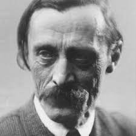

Kós Károly

Életútja
Szülõháza Temesváron
Négygyermekes postatisztviselõ egyetlen fiaként született. Középiskolai tanulmányait a kolozsvári református kollégiumban végezte, ezután a budapesti József Nádor Mûegyetem mérnöki szakára jelentkezett. Két év múlva átiratkozott az építész szakra, ahol 1907-ben szerzett diplomát.
Kezdõ építészként különbözõ építészeti irodákban dolgozott (Pogány Móric, Maróti Géza, Györgyi Dénes), majd a Székelyföld építészetét tanulmányozta. Tervezõi munkájában elsõsorban a kalotaszegi népi architektúra, az erdélyi népmûvészet és történelmi építészeti emlékek motívumait igyekezett felhasználni. 1912-ben Régi Kalotaszeg c. illusztrált építészeti tanulmányát a Magyar Mérnök- és Építész-Egylet Czigler-érmével tüntették ki. 1916-ban õt bízták meg IV. Károly király koronázási ünnepsége díszleteinek tervezésével.
1910-ben földet vásárolt a kalotaszegi (Alszeg) Sztánán, felépítette nyaralóját (késõbbi lakóházát) és feleségül vette a türei református lelkész leányát, Balázs Idát. Gyermekeik közül Kós Balázs (1912–1967) mezõgazdasági szakíró, szerkesztõ, Kós András (1914–2010) szobrászmûvész, Koós Zsófia (1916–1990) színésznõ, ifj. Kós Károly (1919–1996) néprajzkutató, író lett. 1917–1918 során állami ösztöndíjjal Isztambulba ment tanulmányútra. 1944 õszén sztánai otthonának – románok általi – kifosztása után Kolozsvárra menekült.
1919-ben megalakította a Kalotaszegi Köztársaságot.
1924-ben írótársaival megalapította az erdélyi írók önálló könyvkiadó vállalatát, az Erdélyi Szépmíves Céhet, amelynek megszûnéséig, 1944-ig tagja volt. Egyik alapító tagja volt az 1926-ban alakult helikoni közösségnek, amelynek folyóiratát, az Erdélyi Helikont 1931-tõl õ szerkesztette. 1948–49-ben a Világosság c. kolozsvári lap belsõ munkatársa volt.
Élete során több közéleti szerepet vállalt: 1912 telén Sztánán Kalotaszeg címmel lapot indított, 1921-ben (Paál Árpáddal és Zágoni Istvánnal közösen) megjelentette a Kiáltó szó címû röpiratát. Alapító tagja volt az Erdélyi Néppártnak (1921) és 1922-ben Vasárnap címmel képes politikai újságot indított és szerkesztett. A második világháború után, a demokratikus átalakulásban reménykedve, újra politikai szerepet vállalt és a Magyar Népi Szövetség Kolozs megyei elnöki tisztségét töltötte be, majd 1946–1948 között nemzetgyûlési képviselõ volt.
1940-tõl a kolozsvári Mezõgazdasági Fõiskolán mezõgazdasági építészetet tanított. 1945-tõl a Fõiskola dékánja, majd 1953-ig tanára volt.
Építészként
1. Óbudai református parókia, Budapest (1908–1909)
2. Római katolikus templom, Zebegény (1908–1909) – Jánszky Bélával
3. Állatkerti pavilonok (például Madárház), Budapest (1909–1910) – Zrumeczky Dezsõvel
4. Sztánai lakóháza: a „Varjúvár” [1] (1910)
5. Városmajor utcai iskola, Budapest (1910–1912) – Györgyi Dénessel
6. Vécsey-kúria, Szada (1911)[1]
7. „Wekerle” Munkás és Tisztviselõtelep központja (Kós Károly tér), Budapest (1912–1913)
8. Székely Nemzeti Múzeum, Sepsiszentgyörgy (1911–1912)
9. Református templom ("Kakasos templom"), Kolozsvár, Monostori út (1912–1913)
10. „Kós-ház”, Kós tervei alapján készült, eredetileg lakóház (épült 1931-ben) Miskolc, Görgey u. 32
11. Gyimesi határõrlaktanyák (1940?)
12. Mûcsarnok, Kolozsvár (1943)
13. Mátyás király szülõházának részbeni restaurálása, Kolozsvár (1944)
14. Mérai tejcsarnok
15. Siklód új temploma 1994-ben készült el Kós Károly tervei alapján
16. Marosvásárhely Gázgyári épület, Mezõgazdasági Iskola
17. Kolozs Kolozsi Általános Iskola